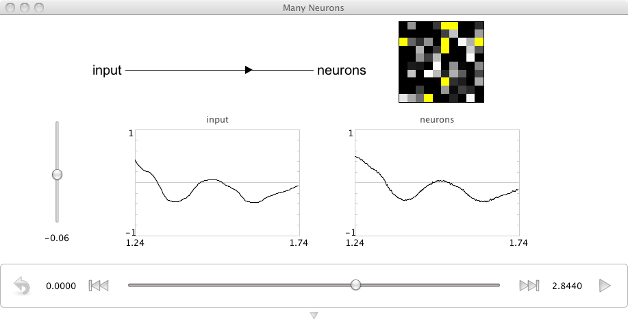

Purpose: This demo shows how to construct and manipulate a population of neurons.
Comments: These are 100 leaky integrate-and-fire (LIF) neurons. The neuron tuning properties have been randomly selected.
Usage: Grab the slider control and move it up and down to see the effects of increasing or decreasing input. As a population, these neurons do a good job of representing a single scalar value. This can be seen by the fact that the input graph and neurons graphs match well.
import nef
# Create the network
net = nef.Network('Many neurons')
# Create a controllable input with a starting value of -.45
net.make_input('input', [-0.45])
# Make a 1-D population of 100 neurons, with injected noise variance 1
net.make('neurons', neurons=100, dimensions=1, noise=1)
# Connect the input to the neuron
net.connect('input', 'neurons')
net.add_to_nengo()
Video:
This is a simulation of 100 neurons in Nengo. The graphs displayed are similar to the graphs that were shown for a single neuron and for 2 neurons. At the bottom there are spike rasters for about one quarter of the cells that are in this population of neurons. The yellow and black graph is showing the activity of the neurons laid out as a cortical sheet. That includes all 100 cells. And the final graph is an estimate of the input. This is now considered a decoding of the representation carried by the spiking activity of these individual neurons. You can see that with 100 neurons we can actually do a very good job of estimating this input, which is a scalar. So as I’m up here at 1, you can see that the estimate is at about 1. As I slowly go down, the estimate follows it smoothly through 0 and finally down into the negative range where there are no particular discontinuities or any errors in the decoding. You can also watch the pattern of spikes across the population change as the input is changing. Given this relationship, we would like to claim that these neurons are “representing” the scalar because we can decode, quite accurately, the value of that scalar given the spike trains of those neurons.
{kind=link}